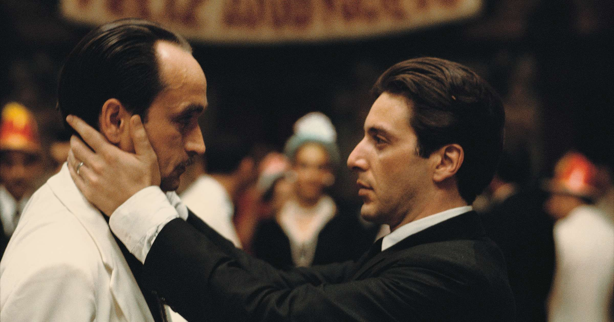

The Pizza Party story is really the story about America, from Naples to New York City to Buffalo, NY. In 1938 at the age of 12 and 15 Giovanni and Carlo Pardini left their home in Naples, Italy to achieve the American dream.
After a short stay at Ellis Island. Their name was shortened to "Pardi", they lived in New York City until leaving for Buffalo in 1950. The brothers opened "Pizzeria di Pardi" on Grant street in Buffalo's west side. In 1986 we expanded to 8 locations in western NY and Pizzeria di Pardi became Pizza Party! Today we have three locations serving up the classic pizza & wings Buffalo is known for our original location as well as our Hertel Avenue and UB locations.
Carlo and Giovanni Pardi NYE Havana, Cuba. 1958 (colorized).
Royal Treatment